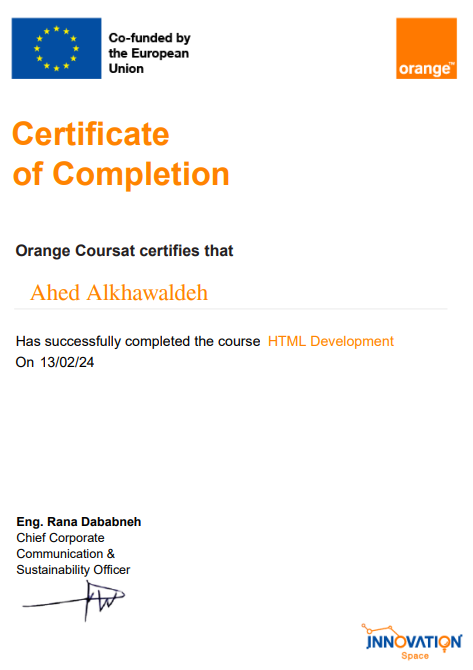
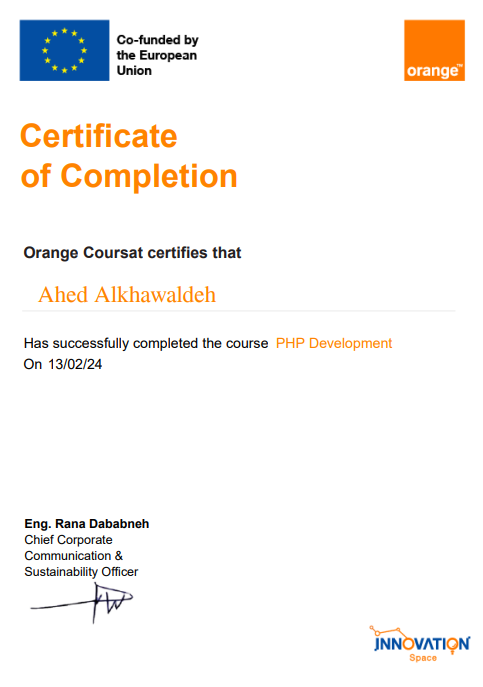
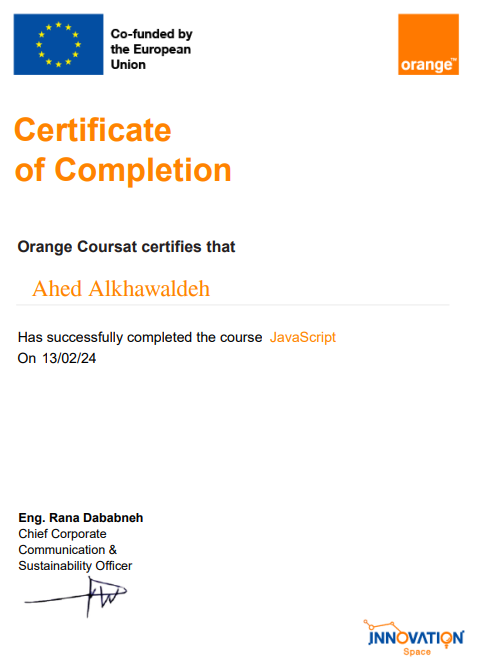
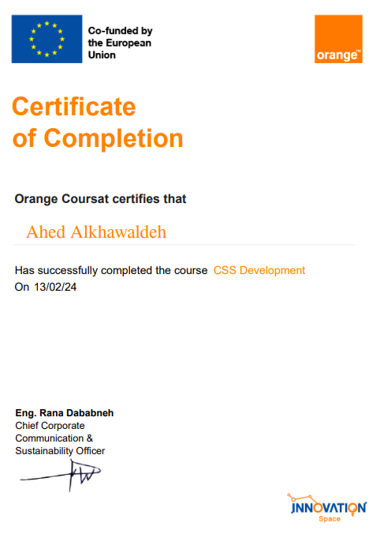

I'm Studied Software Engineering in Al-Balqa' Applied University (center)
I work Full Stack Web developer
and I took many courses and obtained
certificates in this field
Volunteering certificate for 12 hours 27-JUN-2021 to 8-JUL-2021
Taken from the Alef Initiative team
Volunteer to participate in a study on life skills for one hour 21-APR-2020
Taken from the We platform
TRAINING
1-JULY-2023
Three months training
Responsibility:
Writing programming code
Teaching web development and wordpress
PROJECTS PARTICIPATED IN
Academic Quran project - Amman,jordan
1-JULY-2023
Responsibility:
Writing all documents required for the project Auditing all reports required for the project
Buildings and installations company - Saudi Arab
SEP 2023 - NOV 2023
Responsibility:
Writing codes in a new language
Create a list through which customer data can be modified or deleted
Create a special application for the company to deal with its customers faster
Create our own web page so that we can modify the application of the company we deal with
Programming the application to help the company book its appointments more accurately for its customers
Create special programming in the application for the customer’s ability to see all the buildings available with this company
I'm training and get certificates in multi language programming
   